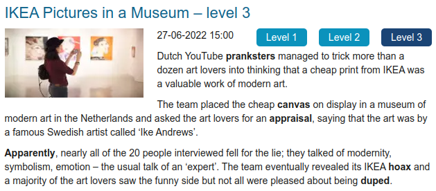

✅ [A1] – Avaliação do Módulo 2 - Foco no vocabulário
Iniciado em quinta, 24 ago 2023, 20:01
Estado Finalizada
Concluída em quinta, 24 ago 2023, 21:01
Tempo empregado 59 minutos 59 segundos
Avaliar 9,17 de um máximo de 10,00(91,67%)
Questão 1
De acordo com Lapkoski (2012, p. 94), os tipos de vocabulário são o receptivo (concernente à audição e à leitura) e o produtivo (concernente à fala e à escrita).
Escolha uma opção:
Verdadeiro
Falso
Verdadeiro
Questão 2
No vídeo “Inglês sem mistério (Parte 2)”, a professora explica a expressão “early bird”, que aparece em um site de um evento acadêmico. O que “early bird” quer dizer, neste contexto?
a. “Pássaro que canta cedo” - os que se apresentam no primeiro dia do evento.
b. “Pássaro que come cedo” - os mais experientes, com carreira universitária consolidada.
c. “Pássaro que chega cedo” - os primeiros a se inscreverem no evento.
d. “Pássaro que trabalha cedo” - preço para alunos e professores em início de carreira
c. “Pássaro que chega cedo” - os primeiros a se inscreverem no evento.
Questão 3
Após a leitura do texto Call the next generation “Independents”? (FERRO, 2012, p. 124-125), responda:
Nas organizações bem-sucedidas, a norma será o pensamento criativo. Verdadeiro ou falso?
Escolha uma opção:
Verdadeiro
Falso
Verdadeiro
Questão 4
No vídeo “Telephone call”, a professora conta uma experiência engraçada de quando ela começou a trabalhar na secretaria de uma escola internacional.
Escolha uma opção:
Verdadeiro
Falso
Falso
Questão 5
No vídeo “Compreensão Escrita: Sites, Dicionários, Tradutores, Ferramentas”, a sugestão apresentada pela professora para verificar colocações é:
a. Rosetta Stone
b. Urban Dictionary
c. Contexto Reverso
d. The Corpus of Contemporary American English (COCA)
d. The Corpus of Contemporary American English (COCA)
Questão 6
Leia o texto abaixo e diga se o enunciado seguinte é:

(Fonte: aqui>>)
Para entender o texto (e a “pegadinha” que ele conta), é necessário conhecimento prévio. Por exemplo, é preciso saber o que é IKEA. IKEA é uma multinacional que comercializa móveis e objetos de decoração. Sua marca é o estilo monte-você-mesmo e o preço abaixo do mercado - e definitivamente não vende obras de arte.
Escolha uma opção:
Verdadeiro
Falso
Verdadeiro
Questão 7
Leia o texto abaixo e relacione as palavras ao seu significado:
(Fonte: aqui>>)
Duped ..........
Appraisal ..........
Canvas ..........
Hoax ..........
Prankster ..........
Duped Enganado(a)
Appraisal Avaliação
Canvas Telas
Hoax Farsa
Prankster Pessoa que gosta de pregar peças
Questão 8
De acordo com Lapkoski (2012, p. 97),
expressões idiomáticas “são itens ..........
compostos de várias .........., que juntas têm um significado ..........
e, por isso, não se pode entender seu significado por meio do ..........
de cada palavra em separado”.
expressões idiomáticas “são itens Lexicais compostos de várias Palavras, que juntas têm um significado Particular e, por isso, não se pode entender seu significado por meio do Significado de cada palavra em separado”.
Questão 9
Após a leitura do texto Call the next generation “Independents”? (FERRO, 2012, p. 124-125), relacione as seguintes palavras ao seu significado:
Employer ............
Employment............
Employee............
Employer Empregador
Employment Emprego
Employee Empregado
Questão 10
Lapkoski (2012, p. 101) elenca algumas estratégias para lidar com o vocabulário desconhecido:
a. Identificar e usar as dicas do contexto
b. Reconhecer e usar (falsos) cognatos
c. Usar partes da palavra (morfologia)
d. Usar o dicionário
e. Usar a estrutura da sentença (sintaxe)
f. Ignorar a palavra desconhecida
g. Elaborar listas por grupos semânticos
a. Identificar e usar as dicas do contexto